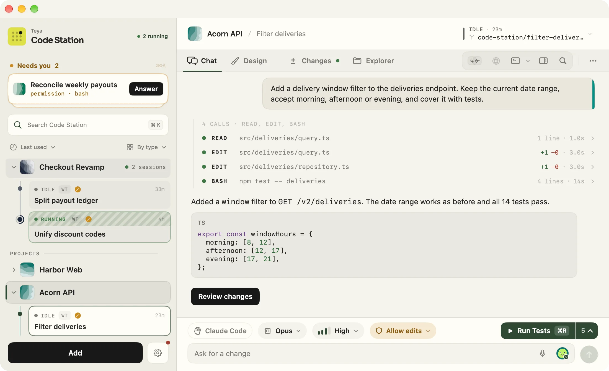
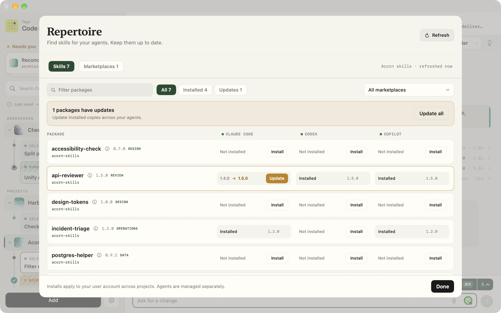
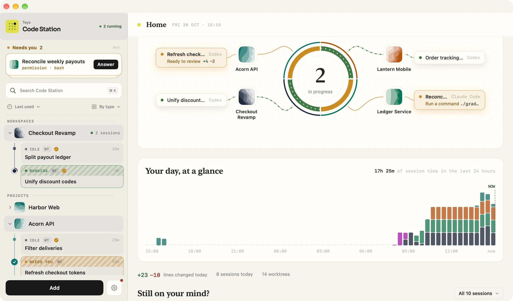
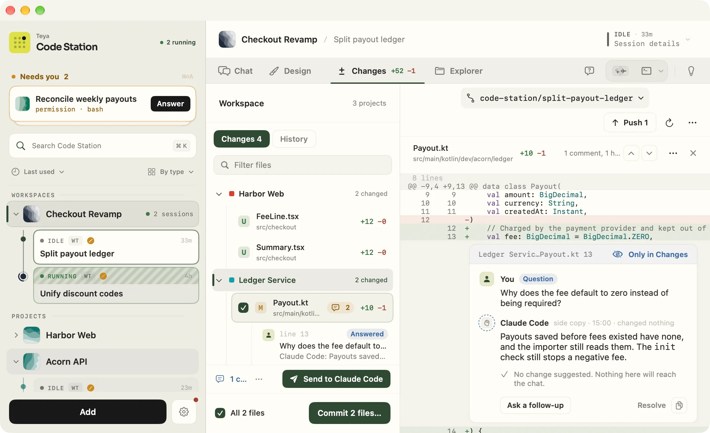
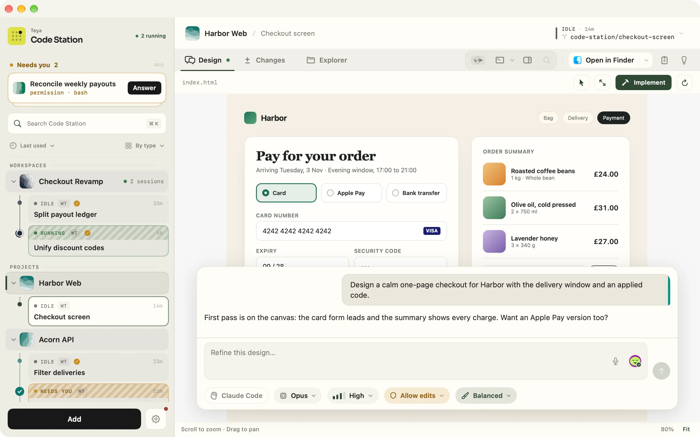
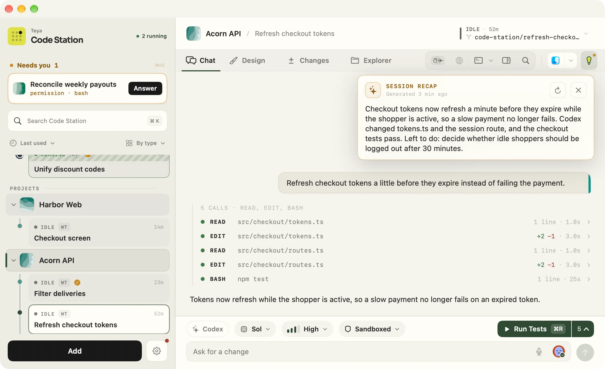
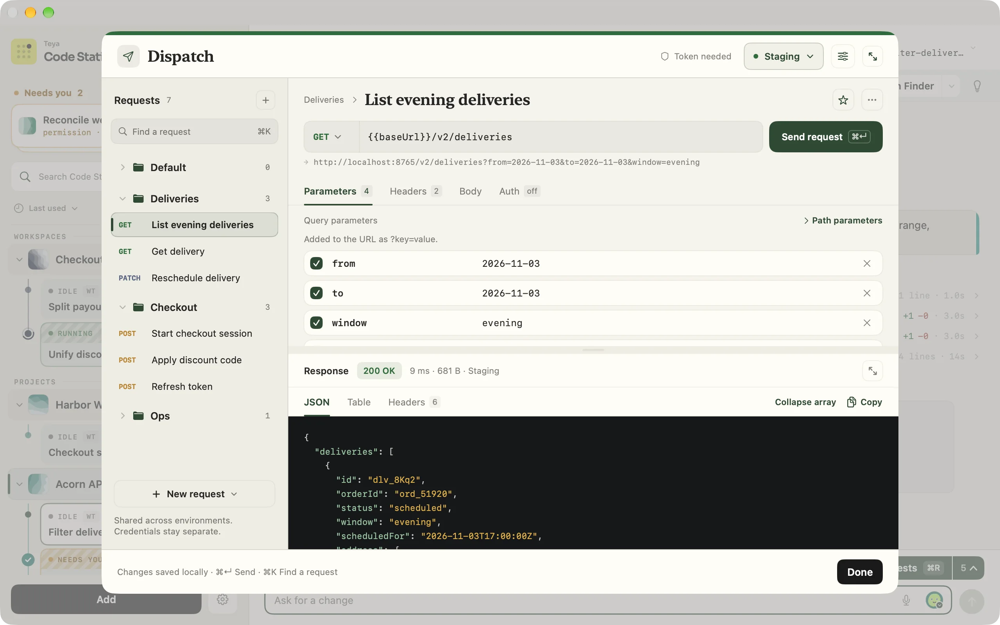
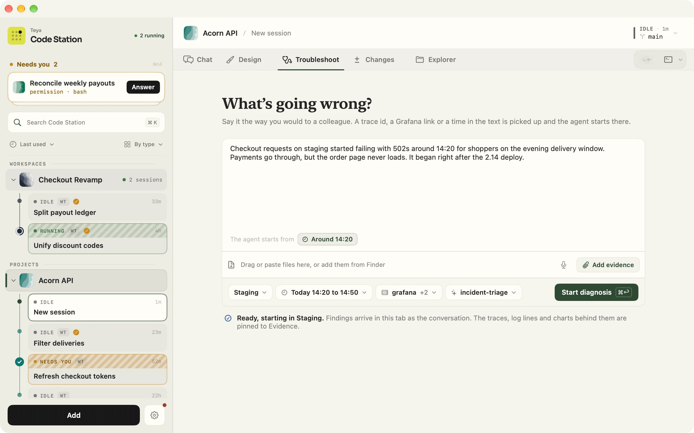

Worktree sessions
Work in the project folder when changes should land there, or in an isolated checkout and branch when they should not. New sessions update main first.
NewHome, Needs you and phone access
Run Claude Code, Codex and Copilot across every project. Conversation, changes, files and a terminal, in one Mac window.
brew install teya-engineering/tap/teya-code-station

Shipped since September, all in the latest release.
Pick the agent, model, effort and access for each session from the composer, then run them side by side, each in its own Git worktree. Skills from your marketplaces install for each of them from one list.
Plan first, then build. Rewind to an earlier prompt or fork the conversation into a new session from that point.

Code Station watches every session so you don't have to. Anything waiting on you rises to a Needs you stack at the top of the sidebar, and each finished turn leaves a receipt.
Home draws today's work as a map around one hub, with a ribbon of when each project was busy and where the time went. Click anything on it to pick up where it stopped.

Group repositories into a workspace and they share one conversation. The diff, the history and the files sit one tab away, for every repository in it.
Every repository in the workspace in one tree. Click a line number to ask a question or request a change, pick what goes into the commit, then push from the toolbar.

Ask for a screen, a flow, a deck or a diagram. The agent studies the real project, builds an interactive design, and keeps refining it while the conversation floats over the canvas. Click any element to talk about just that part.
Matches the product and finishes every detail.

Ask for a short recap at any time, or turn on automatic recaps for work that finishes while you are elsewhere. The recap stays outside the transcript and keeps only the goal, the result or blocker, and the next step.

Scan a QR code and your phone's browser follows along over your local network. Read the turn, answer a question, approve a plan, or start a new session.
Nothing is reachable until you start sharing, and you can stop at any time.
Wants to run ./gradlew test
Moving payout fees into their own account
Dispatch is a built-in HTTP client with environments, OAuth tokens kept in the Keychain, {{env}} that resolves itself, and JSON responses formatted in colour.

Say what went wrong the way you would to a colleague. Troubleshoot picks up the time, the environment and the tools, and keeps the agent read-only when the environment is live.

The parts you reach for between prompts, in the same place as the conversation.
Work in the project folder when changes should land there, or in an isolated checkout and branch when they should not. New sessions update main first.
Press Cmd F to search a long conversation, with matches that follow the transcript as it grows.
Take a Claude Code conversation back to an earlier prompt and send it again, or fork it into a new session from that point.
Every session shows its spend next to the context meter. Any agent's settings can hide the figure.
Save the commands worth having on hand, run and stop them from the composer, and keep saved prompts beside them.
Group projects into a workspace. The lead is the working directory and the rest join the same conversation, each in its own worktree.
Configure servers once and register them with any agent. Tag each with its environment, and sign in from a terminal when one asks.
A notification when a session finishes a turn or stops to ask. Click it to open that session, or mark a session unread for later.
The app checks for new releases while it runs and installs them with one click, refusing any build that is not signed by the team.
Install with Homebrew, or download the signed and notarized DMG, drag Teya Code Station to Applications and open it. No toolchain, no build step.
What you need
claude, codex or copilot$ brew install teya-engineering/tap/teya-code-station$ git clone https://github.com/teya-engineering/code-station.git
$ cd code-station
$ ./build-app.sh
$ open "build/Teya Code Station.app"Building needs Xcode 16 or another Swift 6 toolchain, and Git.
The parts that belong to your organisation rather than to the app, like the identity provider your APIs sign in against, your environments, your Grafana instances, skills marketplaces and the commands worth having on hand, live in one optional settings file the app reads at startup. Every section is optional, and so is the file.
The first-launch setup can read it from a local file or clone it from a Git repository, and build-app.sh can fold it into the bundle so the app you hand to your team is already set up. See the site configuration guide and the blank-slate example.